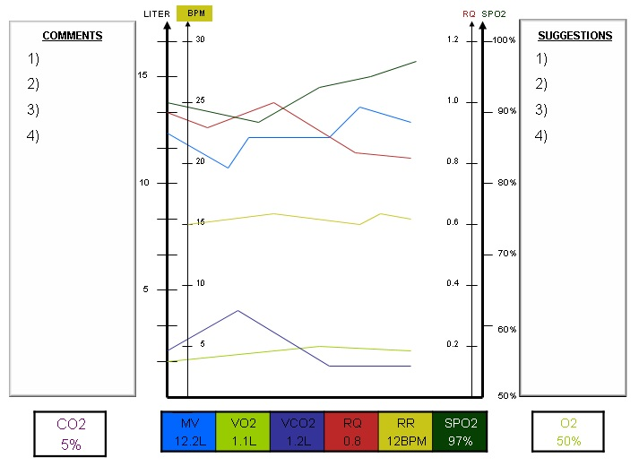

Multi Graph

Settings
Working file name:
Zvika Markus A
Zvika Test 2
Zvika
Zvi
Commentes:
Suggestions:
Variable
Compare
Variable/Value
Rule
Variable
Compare
Variable/Value
Low CO2 + MV
Low CO2
Do Z
increase CO2
Reduce O2<
Low Z
IF
CO2
MV
O2
RR
SPO2
VCO2
VO2
RQ
>
==
!=
<
>
<=
>=
CO2
MV
O2
RR
SPO2
VCO2
VO2
RQ
L
And
Or
CO2
MV
O2
RR
SPO2
VCO2
VO2
RQ
>
==
!=
<
>
<=
>=
CO2
MV
O2
RR
SPO2
VCO2
VO2
RQ
L
Save settings to working File
Export to file
Export to Network
New settings
Metabolic Screener
Analyzer
Import settings from Network
Import settings from file
(C) Zvika Markus 2020